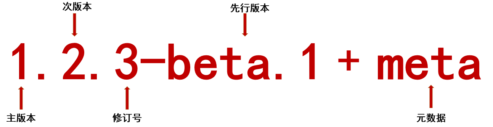

001-semver语义化
semver其实就是让版本号语义化，是由npm团队起草。
1 版本号格式
版本号格式:

- 主版本: 可能根本上的变化
- 次版本: 可能有一些api等的变化
- 修订号: 一般解决的是小的bug
- 先行版本: 由2部分组合成，前部分是
alpha|beta|rc|，后半部分是数字，随着先行版本迭代增加 - 元数据: 表示先行版本中打了很多的tag
2 常见的先行版本号
alpha: 内部测试版本，给内部开发和测试用的，有很多bugbeta: 公测版本，消除了严重错误，但还是会有比较多bugrc: 发行候选版本，这个版本不会加入新功能，主要是排查bugrelease: 正式版